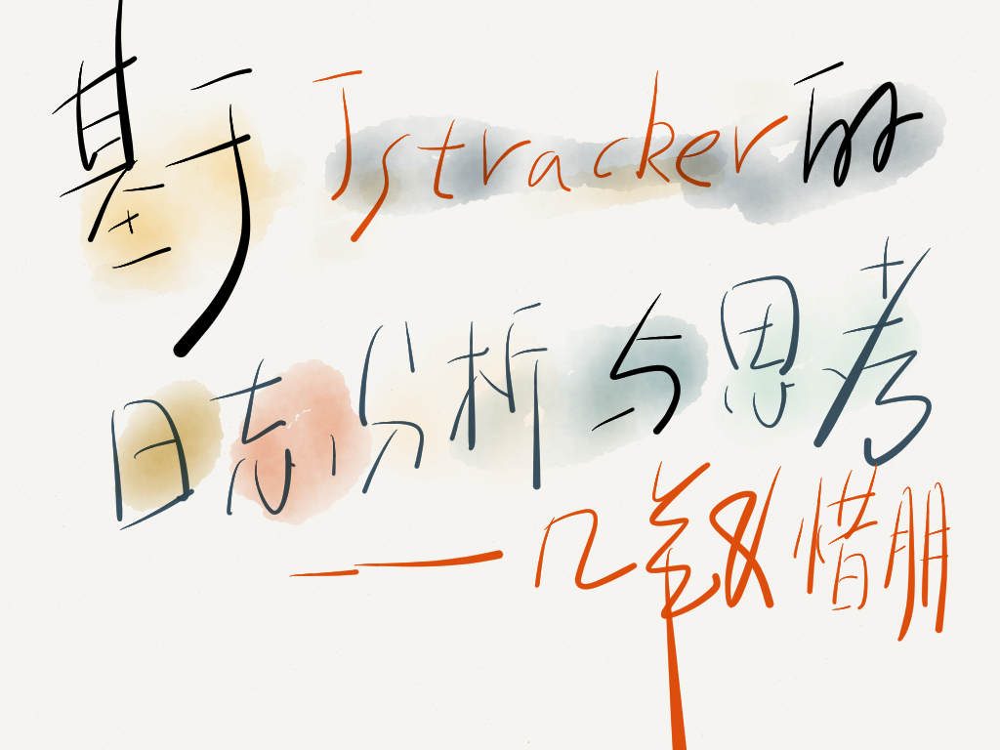
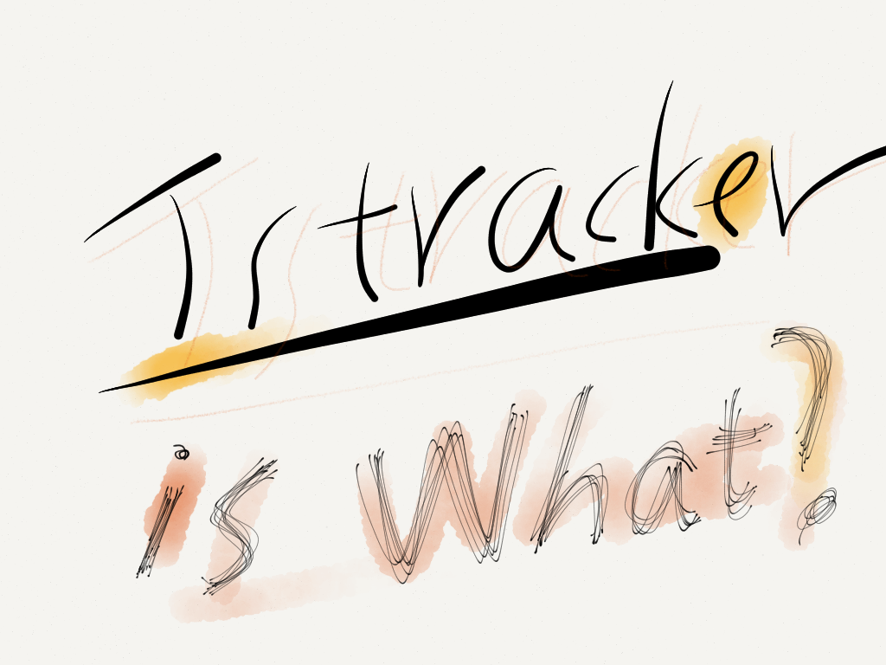
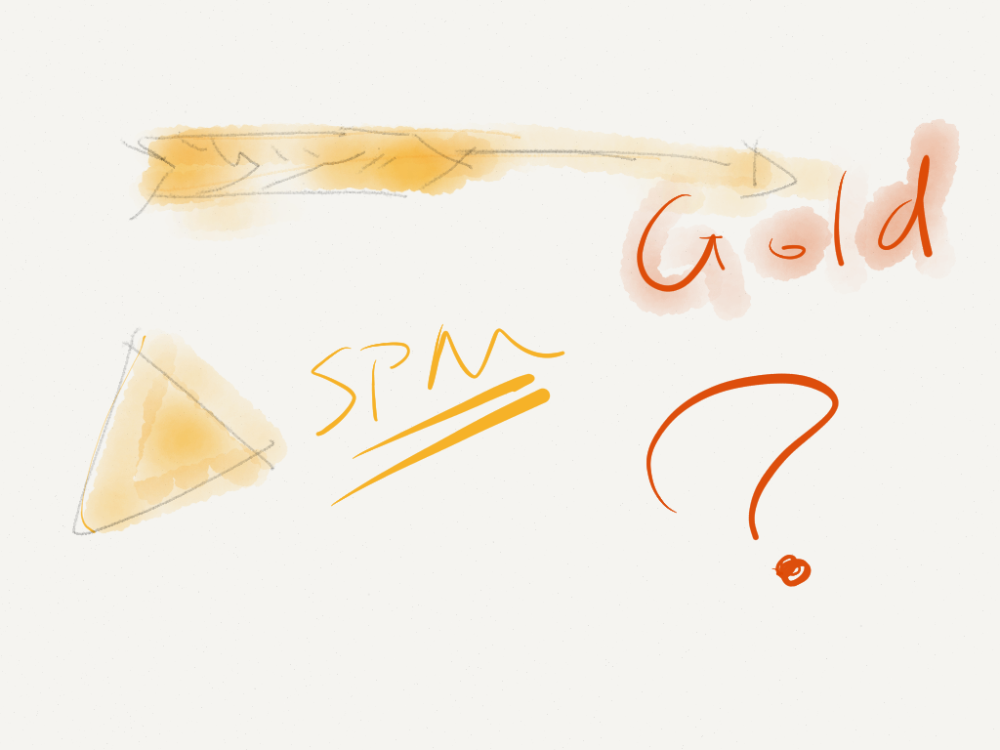

Your browser doesn't support the features required by impress.js, so you are presented with a simplified version of this presentation.
For the best experience please use the latest Chrome, Safari or Firefox browser.



SPM: 基于位置
黄金令箭：基于行为
Jstracker: 基于逻辑
基于Jstracker,what can we do?
@游侠 实时监控JS报错
性能分析 => 各个浏览器的onload时长
模块的使用统计 => log
用户行为分析 => 停留时间等
功能验证
//定义A模块
KISSY.add('a', function(S, codeTracker) {
return {
init: function() {
JSTracker.log('A-module');
}
};
}, {
requires: []
});
KISSY.use('a', function(S, A) {
var isDaily = false;
try {
isDaily = TB.environment.isDaily;
JSTracker.info('TB-Env-cat');//如果有环境变量记录一个消息日志,类型info
} catch (err) {
isDaily = !!~location.host.indexOf('tmall.net');
JSTracker.warn('No-TB-Env-cat');//类型warn
}
if (isDaily) {//如果是daily环境，记录一个错误日志，类型error
JSTracker.error('isDaily');
} else {
A.init();// 模块被初始化后，记录模块日志,类型log
}
});
// JSTracker 埋点参数
JSTracker.send({
'msg': '', //可选 指定这次报错的描述。 默认： 空
'file': '', //可选 指定这次报错的js文件路径。 默认： 空
'line': 0, //可选 指定这次报错的js行号。 默认： 0
'delay': +new Date() - startTime,
//可选 记录这次错误发生的时间和页面开始执行的时间差。 默认： 自动设置
'category': '', //可选 指定这个错误发生的分类。 默认： 空
'spm': win.JSTracker._configs.spm, //可选 告诉track服务器这个错误发生的spm
'sampling': win.JSTracker._configs.sampling, //可选 告诉track服务器这个错误发生的抽样，忽略全局设置的抽样率。 默认：全局抽样率
'url': location.href, //可选 虚拟url，指定后会将这个报错归类到指定的url。 默认：location.href
'ua': navigator.userAgent, //可选 指定ua。 默认：自动读取。
'scrolltop': (document.documentElement
&& document.documentElement.scrollTop)
|| (document.body && document.body.scrollTop) || 0,
'screen': screen.width + "x" + screen.height,
'nick': nick
});
谢谢观看
Use a spacebar or arrow keys to navigate